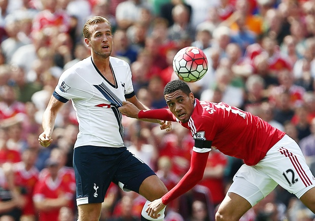
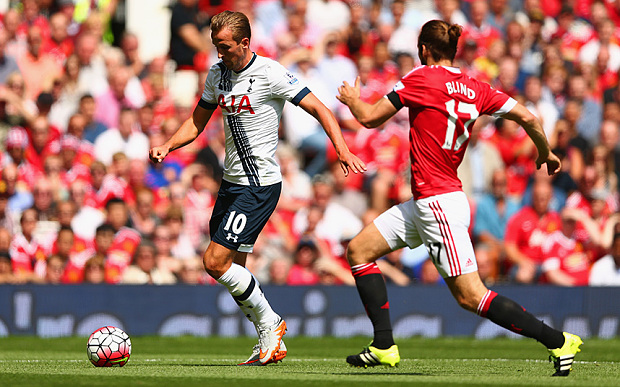
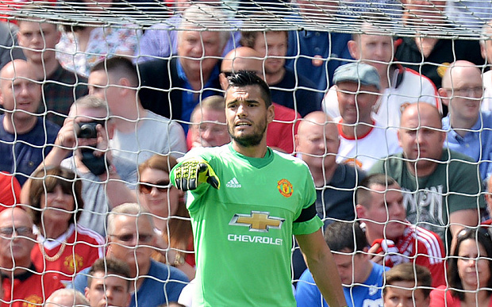

Club
Football
News
Fans
Tickets
Schedule
Tour
Manchester United vs Tottenham Hotspur

Harry Kane is no one-season wonder

Mata deserves place in Van Gaal's Galacticos

Rooney (and Kane) needs support
United really need to sort out DeGea
slider in html
Manchester United F.C.
6th in English Premier League
Old Trafford
Man United 1 - 0 Tottenham
wf
wf
wf
wf
wf
wf
wf
wf
wf
wf
wf
wf
wf
wf
wf
wf
wf< /p>